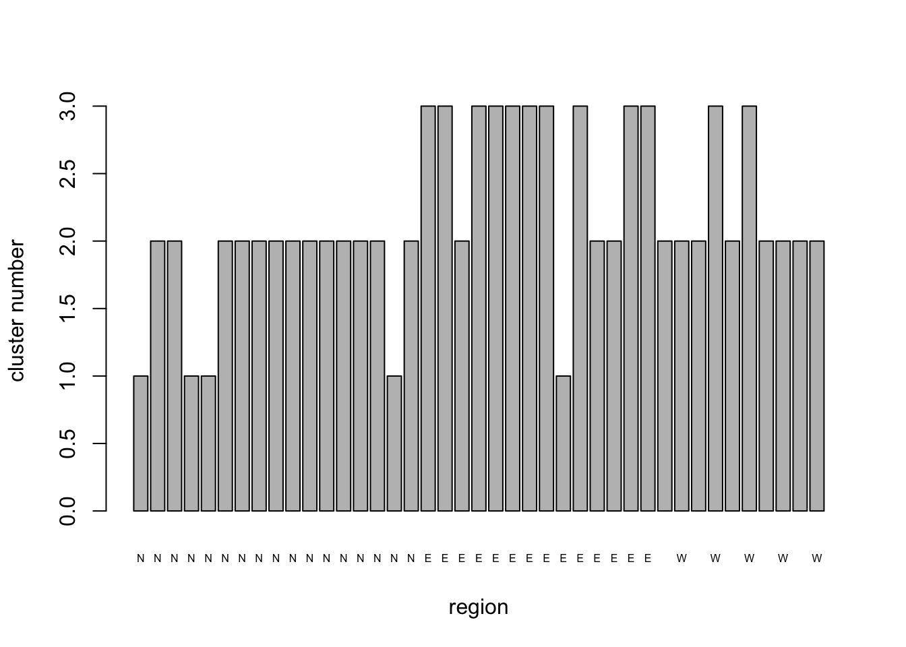
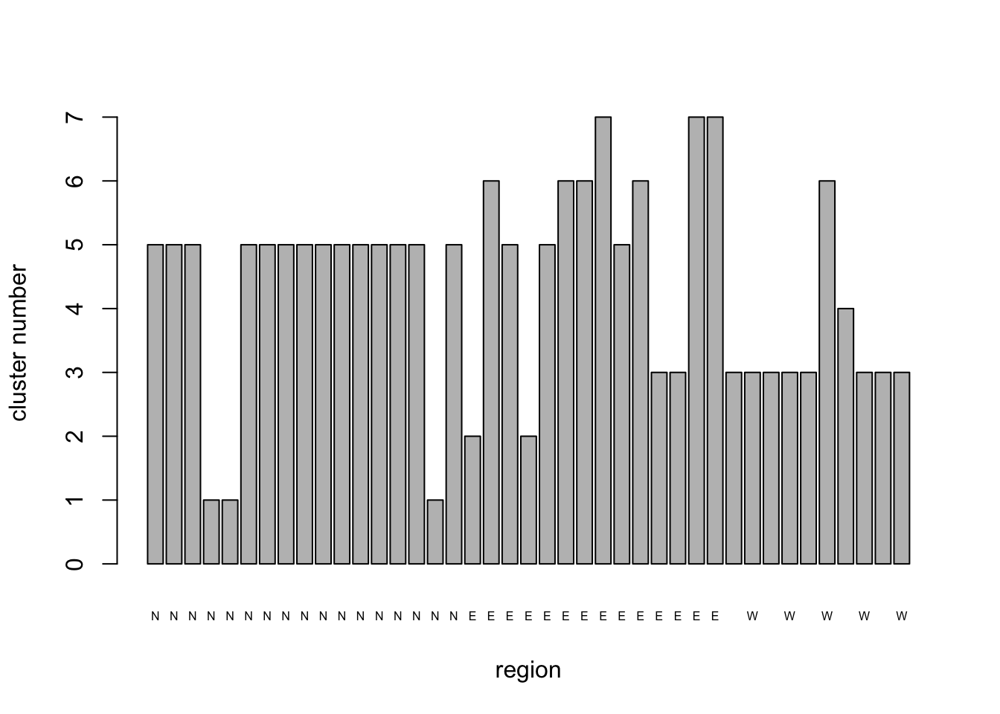
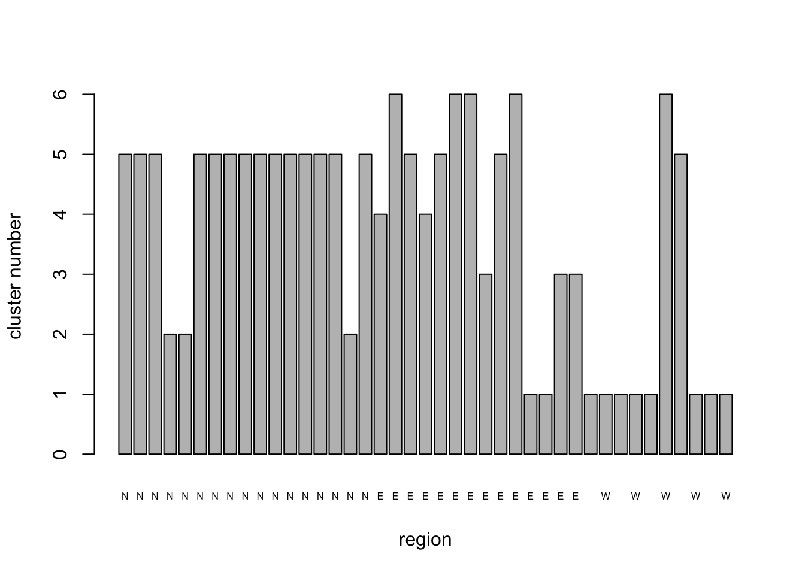

Cluster Analyses
This section of the workshop can be seen as a logical extension of the first two, but also as a completely independent approach to multivariate analysis. As the name implies cluster analysis is concerned with groupings. We are familiar with cluster analyses of many different forms in lots of different branches of biology from taxonomy to evolutionary biology. Particularly in the fields of evolutionary biology and phylogenetics hierarchical clustering (tree-building) techniques have reached extremely sophisticated levels, in which the clustering algorithms embody detailed hypotheses about the processes of evolution at the molecular level.
In this introductory course we will take a very broad look at clustering methods from a classical perspective. At this level, and from approach, one might say clustering is a phenomenological exercise: one starts with a set of data, makes some choices about how the clustering process will act on the data, and then attempts to interpret the outcome in terms of what is known about the objects being subjected to the analysis. The clustering algorithms themselves are typically “blind” to the underlying biological or physio-chemical properties of the objects.
Before getting down to details a couple of warnings for newcomers to cluster analysis. It is one of the areas of quantitative biology that has a large amount of inherent subjectivity. The well-known characterization of taxonomists as either lumpers or splitters is a good indication of this general phenomenon. Even clustering techniques that have built-in objective statistical tests for deciding on numbers of clusters, cluster membership, and the statistical significance of these results, are often based on theoretical assumptions that themselves are open to debate (and hence susceptible to the dangers of subjectivity). As with most of these sorts of debates in biology, there is a core of tried and trusted approaches that nearly everyone agrees are robust, (or at least where the dangers are well-understood) and a periphery of more contentious approaches where you might have to work harder to justify your assumptions and conclusions to readers and critics. Subjectivity cuts both ways, remember. It allows you the freedom to introduce well-argued hypotheses into your analysis at the same time as exposing you to the risk that someone else will disagree with your choices. For those who want to deal with subjectivity by stating it in terms of prior probabilities there is a full range of Bayesian clustering approaches. We will not look at any of these in the workshop, but encourage interested readers to read the package information files that can be found on the CRAN web page at the link at the end of this section. For those who do not want to follow a Bayesian approach we would advocate the following general guidelines. Your assumptions should combine biological plausibility with the most parsimonious explanation available.
Perhaps as a consequence of the role that subjectivity can (and will) play in cluster analyses, it is an area of analysis that offers a bewildering selection of techniques. Our second warning is simply that for those who are completely new to the subject, when you go beyond the very brief introduction we give here, the list of possible approaches might be overwhelming. If cluster analysis is going to be important in your future we strongly recommend some advanced training and a lot of computer time getting experience. At anything more than a superficial level, cluster analysis is not the sort of subject one can dip in and out of very easily. CRAN maintains a list of well-established approaches available in R can at this URL.
So, with warnings duly given here is
A simple approach
One starting point is to decide if you want to work out how many clusters there are in a set of objects, or if you want to build a tree that shows how the objects are related to one another. This decision can be stated as whether you want to perform a non-hierarchical cluster analysis (NHCA) or an hierarchical cluster analysis (HCA). The first of these is often achieved by picking a numerical criterion that can be minimized (or maximized) by allocating objects to clusters (for example the ratio of within-cluster to between-cluster variance) and selecting the number of clusters that achieves the optimized numerical result. The second approach is typically achieved by first calculating a similarity matrix for the objects and then applying a tree building algorithm which repeatedly applies a pre-selected joining rule to the objects on the basis of their similarity until they are all linked into a single group. What has just been said should give a clue as to how the two broad classes of cluster analysis (NHCA or HCA) are related to the ordination methods we looked at in earlier sections.
Non-Hierarchical Analysis
For this example we return to the first data set on diseases in wheat
crops in Scotland. Recall that the PCA results hinted that there might
be a regional structure to the data. A logical question to ask is
whether there are, in fact, three clusters (or groups) of fields. The
base statistics package in R provides the function kmeans()
in the base stats package to do non-hierarchical cluster analysis. In a
K-means analysis the clustering algorithm moves objects between clusters
until it finds the minimum value of the within-group sums of squares,
given the number of clusters specified.
As a first exercise, let’s assume that there are 3 clusters of fields and look at the output that K-means produces. For this analysis we’ll need the data set from the PCA that we carried out at the start of the workshop. Since we know the rust data were all 0’s we can work with the reduced data set that we generated with the rust variables dropped. If you ran the R code without editing any of the object names and if you haven’t re-started R since you ran the PCA you should have a data frame called PCA1_cordata in your environment. To check if it is there just type the name at the console. If the data frame is in your environment R will print it to the screen. If it’s not there R will tell you it does not exist.If you don’t have the data frame in your environment, the following code will let you re-load the data and re-create the data frame we want.
The data are in file PCA1_Survey.csv.
PCA1data <- read.csv("data/PCA1_Survey.csv", head = TRUE)
PCA1_cordata <- PCA1data[c(-7, -8, -9)]
head(PCA1_cordata)Because we already know that the data are on different measurement
scales and the clustering algorithm is working on sums of squares we
might suspect that the solution will be dominated by the data variables
with the largest absolute values. To guard against that effect we can
use the scale() function to mean-center the data and divide
each variable by its standard deviation before the analysis. Note that
scale() only works on numeric data so we split the data
into two sections and apply scale() only to columns 3 to
14.
NHCA_data1 <- data.frame(PCA1_cordata[, 1:2], scale(PCA1_cordata[, 3:14]))
head(NHCA_data1)# Cluster the fields into 3 groups
NHCA_fields1 <- kmeans(NHCA_data1[, 3:14], 3)
NHCA_fields1## K-means clustering with 3 clusters of sizes 3, 17, 21
##
## Cluster means:
## ST_L St_G Sn_L Sn_G Pm_L Pm_G Fu_L
## 1 -0.3558113 -0.8087150 3.1344702 1.3628278 0.3860533 -0.4821244 -0.5209717
## 2 0.6974930 0.3766294 -0.1658997 0.1364024 -0.3301542 -0.4002391 -0.2478280
## 3 -0.5138070 -0.1893597 -0.3134817 -0.3051107 0.2121172 0.3928780 0.2750472
## Bo_L SM_E ES SES TA
## 1 -0.5648790 0.9978334 -0.1918340 1.35011557 -0.3703586
## 2 1.0214250 0.6199470 0.6863872 -0.01729066 -0.3027139
## 3 -0.7461708 -0.6444095 -0.5282419 -0.17887645 0.2979625
##
## Clustering vector:
## [1] 3 3 3 3 3 3 3 3 3 3 3 3 3 3 3 3 3 1 2 3 1 3 2 2 2 3 2 2 2 2 1 2 2 2 2 2 2 3
## [39] 2 2 2
##
## Within cluster sum of squares by cluster:
## [1] 38.47175 138.59169 157.82690
## (between_SS / total_SS = 30.2 %)
##
## Available components:
##
## [1] "cluster" "centers" "totss" "withinss" "tot.withinss"
## [6] "betweenss" "size" "iter" "ifault"Asking R to print the kmeans object produces a summary of the analysis in the following order:
- The number of objects in each cluster
- The value of the data variables at the cluster centroids.
- The vector of cluster membership for the objects in the order they appear in the data set.
- The within-cluster sums of squares and the relative size of within- and between-cluster SS. Since the number of data objects is relatively small we can use a simple barplot to look at how the fields from each region have been allocated to the new clusters.
NHCA_3clus_plt <- barplot(NHCA_fields1$cluster,
names.arg = PCA1_cordata$region, cex.names = 0.5, xlab = "region",
ylab = "cluster number"
)
Group 1 is dominated by fields in the North region, with one from the West and five from the East. Group 3 is predominantly composed of sites from the West and to a lesser extent the East and contains no northern fields. Group 2, which has only five members comprises three fields from the North and two from the East. The within cluster sums of squares is 70% of the total. Given that the clustering is an attempt to minimize within cluster S.S. we might well ask whether 3 clusters is the optimum number.
Number of clusters
wSS_fields1 <- (nrow(NHCA_data1) - 1) * sum(apply(NHCA_data1[, 3:14], 2, var))
for (i in 2:20) wSS_fields1[i] <- sum(kmeans(NHCA_data1[, 3:14], centers = i)$withinss)
clus_plot <- barplot(wSS_fields1, xlab = "number of clusters", ylab = "within cluster S.S.", names.arg = seq(1, 20, 1))wSS_fields1_pct <- (wSS_fields1 / wSS_fields1[1]) * 100
clus_plot_pct <- barplot(wSS_fields1_pct,
xlab = "number of clusters",
ylab = "within cluster %S.S.", names.arg = seq(1, 20, 1)
)The for() loop cycles through the clustering procedure,
extracts the within-cluster sum of squares and stores it in rows 2 to 20
of the data structure wSS_fields1 which was declared explicitly outside
the loop. We get the total sum of squares among the objects in the
calculation that declares wSS_fields1 using the sum() and
apply() functions. The result is stored by implication in
the first line of the new data structure. Note that this little piece of
coding shows a feature of for() loop writing that is often
needed: we do the first calculation outside the loop
and then write the loop so that it cycles from 2 to our maximum number
of iterations. In this case that trick let’s us use the loop iteration
index , \(i\), to be the variable that
sets the number of clusters we want to extract from the data each pass
round the loop.
The barplot shows how the within-cluster sum of squares drops as the number of clusters grows. we can use this (if we are lucky), in the same way we use a scree plot in ordination to select the number of dimensions, to work out how many clusters are present. In a clear case, we would choose the number just after a dramatic decrease in the wSS value. In this case we are not so lucky. The Within group S.S. shows a fairly steady decline as the number of clusters increases.The first value of wSS_fields1 contains the total S.S. for the data so by calculating the values for the rest of the bars as a percentage of the first one, we can see how the within-cluster S.S.decreases as a proportion of the total as the number of clusters increases.
The values for 6 and 7 clusters are 48.8% and 40.7% respectively. so with 7 clusters the between cluster S.S. is >50% of the total and the within cluster S.S. has dropped by a relatively large increment in moving from 6 to 7 clusters. These features together suggest that a model with 7 clusters might be of interest.
# Cluster the fields into 7 groups
NHCA_fields2 <- kmeans(NHCA_data1[, 3:14], 7)
NHCA_fields2## K-means clustering with 7 clusters of sizes 10, 2, 17, 5, 3, 1, 3
##
## Cluster means:
## ST_L St_G Sn_L Sn_G Pm_L Pm_G
## 1 1.2241451 1.2063704 -0.2186275 -0.05491992 -0.48362721 -0.48212440
## 2 -0.6191374 -0.8087150 3.4664601 -0.30511069 0.16863317 -0.48212440
## 3 -0.5138070 -0.1567756 -0.2772139 -0.30511069 -0.20737575 0.01737565
## 4 0.1708408 -0.8087150 -0.3182244 -0.30511069 0.03818110 -0.20371453
## 5 -0.9175736 -0.1675514 -0.4510204 -0.30511069 2.82115871 2.81239232
## 6 0.6974930 -0.8087150 -0.5174184 -0.30511069 -0.48362721 -0.48212440
## 7 -0.3558113 -0.8087150 1.1425310 3.03076620 -0.04878696 -0.48212440
## Fu_L Bo_L SM_E ES SES TA
## 1 -0.11467041 1.0214250 0.7273463 0.04071208 -0.5001675 -0.25536259
## 2 -0.81118698 -1.3580309 1.8431054 -0.54713830 1.4427324 -0.37035862
## 3 0.04921584 -0.6861846 -0.6330445 -0.50648331 -0.3205832 0.08009376
## 4 -0.63705784 1.0214250 0.7273463 1.76634449 0.9127635 -0.37035862
## 5 1.04619054 -0.8821397 -0.6927108 -0.65736713 0.2660883 -0.16127493
## 6 1.80075016 -1.3580309 -0.6927108 -0.51076278 0.8952439 5.37944306
## 7 0.05945873 1.0214250 -0.3546019 0.98283793 0.4362660 -0.37035862
##
## Clustering vector:
## [1] 3 3 3 5 5 3 3 3 3 3 3 3 3 3 3 5 3 2 4 3 2 3 4 4 7 3 4 1 1 7 7 1 1 1 1 1 4 6
## [39] 1 1 1
##
## Within cluster sum of squares by cluster:
## [1] 45.04325 11.04295 61.40302 36.40606 14.43222 0.00000 10.53387
## (between_SS / total_SS = 62.7 %)
##
## Available components:
##
## [1] "cluster" "centers" "totss" "withinss" "tot.withinss"
## [6] "betweenss" "size" "iter" "ifault"NHCA_7clus_plt <- barplot(NHCA_fields2$cluster,
names.arg = PCA1_cordata$region, cex.names = 0.5,
xlab = "region", ylab = "cluster number"
)
Although the solution with 7 clusters has reduced the within-cluster S.S. to <50%, it has a couple of clusters that have only 1 or 2 members. This may reflect fields that are truly different from the rest of the sample in some important respect, but it might also be an artefact of the clustering process. It certainly suggests that we should look at the solution with only 6 clusters since we now have the hang of running the analysis.
# Cluster the fields into 6 groups
NHCA_fields3 <- kmeans(NHCA_data1[, 3:14], 6)
NHCA_fields3## K-means clustering with 6 clusters of sizes 5, 3, 18, 10, 3, 2
##
## Cluster means:
## ST_L St_G Sn_L Sn_G Pm_L Pm_G
## 1 0.1708408 -0.8087150 -0.3182244 -0.30511069 0.03818110 -0.20371453
## 2 -0.9175736 -0.1675514 -0.4510204 -0.30511069 2.82115871 2.81239232
## 3 -0.4465125 -0.1929944 -0.2905586 -0.30511069 -0.22272306 -0.01037435
## 4 1.2241451 1.2063704 -0.2186275 -0.05491992 -0.48362721 -0.48212440
## 5 -0.3558113 -0.8087150 1.1425310 3.03076620 -0.04878696 -0.48212440
## 6 -0.6191374 -0.8087150 3.4664601 -0.30511069 0.16863317 -0.48212440
## Fu_L Bo_L SM_E ES SES TA
## 1 -0.63705784 1.0214250 0.7273463 1.76634449 0.9127635 -0.3703586
## 2 1.04619054 -0.8821397 -0.6927108 -0.65736713 0.2660883 -0.1612749
## 3 0.14652330 -0.7235094 -0.6363593 -0.50672106 -0.2530372 0.3745021
## 4 -0.11467041 1.0214250 0.7273463 0.04071208 -0.5001675 -0.2553626
## 5 0.05945873 1.0214250 -0.3546019 0.98283793 0.4362660 -0.3703586
## 6 -0.81118698 -1.3580309 1.8431054 -0.54713830 1.4427324 -0.3703586
##
## Clustering vector:
## [1] 3 3 3 2 2 3 3 3 3 3 3 3 3 3 3 2 3 6 1 3 6 3 1 1 5 3 1 4 4 5 5 4 4 4 4 4 1 3
## [39] 4 4 4
##
## Within cluster sum of squares by cluster:
## [1] 36.40606 14.43222 94.79853 45.04325 10.53387 11.04295
## (between_SS / total_SS = 55.8 %)
##
## Available components:
##
## [1] "cluster" "centers" "totss" "withinss" "tot.withinss"
## [6] "betweenss" "size" "iter" "ifault"NHCA_6clus_plt <- barplot(NHCA_fields3$cluster,
names.arg = PCA1_cordata$region, cex.names = 0.5,
xlab = "region", ylab = "cluster number"
)
Sacrificing some of the within-cluster S.S. by moving from 7 to 6 clusters didn’t really gain us anything useful; we still have a couple of fields that apparently do not belong to any of the larger clusters. Some general results from the analysis are apparent, however. The majority of fields from the West remain clustered together, while the majority of fields from the North form a second relatively stable cluster. The remaining fields from these regions and most of those in the East tend to change cluster identity as the number of clusters changes, suggesting that they do not have as coherent a pattern of diseases as those from the other regions.
A graphical representation of how coherent the different clusters are, would be helpful in interpreting the results of the cluster analysis. We will look at how ordination can be combined with cluster analysis to achieve this, but before doing that, we will look at hierarchical clustering.
Hierarchical Cluster Analysis
As we indicated in the introduction to this section the aim in hierarchical clustering is to form clusters of objects by starting with each object in a cluster of its own and iteratively linking them together according to a clustering algorithm applied to a distance (or similarity matrix) for the objects. We already saw that a distance matrix is the basis for a PCO. We will use the same type of data structure here to examine how the individual fields cluster.
The base stats package in R provides the hclust()
function for performing NHCA. Just as there are different algorithms for
HCA, so there are for NHCA. In the case of NHCA the main differences
among the algorithms relate to the choice of which objects to select for
“joining” at each successive step of agglomeration. At one extreme we
have “complete” (or farthest neighbor) clustering and at the other
extreme “single” (or nearest neighbor) clustering. In between these
extremes we can use methods such as “Ward” clustering or Unweighted
Group Mean Averaging (UPGMA) or “centroid” or any one of several others.
The hclust() function provides “single”, “complete”,
“ward”, “centroid”, “average”, “mcquitty”, and “median” as methods (note
that the option names do not start with upper case
letters).
The easiest way to understand what the differences between any two clustering methods is to start with the extreme case (i.e. complete v single clustering) applied to a toy example. Suppose we have a group of objects which are being subjected to NHCA. Further suppose the process has so far combined the objects into 3 clusters and the next iteration will decide which two of the three to combine to form the next larger cluster. The single (nearest neighbor) approach considers each pair of clusters in turn and notes the similarity between the closest (or most similar) members of each pair. The pair of existing clusters whose most similar individual members have the highest similarity (or smallest distance) are joined together.
The complete (or farthest neighbor) algorithm does the same thing except that it selects the pair of existing clusters whose least similar members have the highest similarity among all possible pairwise comparisons. The result is that single clustering tends to produce long diffuse clusters which may contain rather dissimilar members linked by a long series of pairs of somewhat similar neighbors. In contrast complete clustering tends to produce a large number of small, compact clusters with relatively large inter-cluster differences.
It is important to note that with HCA both the choice of distance
metric used to construct the distance matrix and the
clustering algorithm will affect the results of the clustering exercise.
The standard approach to displaying the results of HCA is to draw a tree
or dendrogram. The base stats package provides some fairly nice tree
drawing tools and some additional tools for exploring the structure of
the tree or highlighting groupings. The following block of code, does
four HCAs on the disease data, first a pair based on a Euclidean
distance matrix calculated from the scaled data and then a pair with the
data converted to simple presence/absence of each disease in each field
and translated into a binary distance matrix. In each pair we first
apply the complete joining algorithm and then the single joining
algorithm. We also illustrate the use of the cutree()
function to cut each tree into 7 groups and the
rect.hclust() function to draw boxes around the branches of
the trees identified by cutree().
# Hierachical cluster analysis: Euclidean distance matrix, furthest neighbor clustering
field_Eucdis <- dist(NHCA_data1[, 3:14], method = "euclidean")
HCA_field1 <- hclust(field_Eucdis, method = "complete")
dend_field1 <- plot(HCA_field1)
field_hgroups1 <- cutree(HCA_field1, k = 7)
rect.hclust(HCA_field1, k = 7, border = "blue")# Euclidean distance matrix, nearest neighbor clustering
HCA_field2 <- hclust(field_Eucdis, method = "single")
dend_field2 <- plot(HCA_field2)
field_hgroups2 <- cutree(HCA_field2, k = 7)
rect.hclust(HCA_field2, k = 7, border = "red")# How do the results look if we use binary data?
# Binary distance matrix, furthest neighbor clustering
HCA_data2 <- data.frame(PCA1_cordata[, 1:2], (PCA1_cordata[, 3:14] > 0) * 1)
field_bindis <- dist(HCA_data2[, 3:14], method = "binary")
HCA_field3 <- hclust(field_bindis, method = "complete")
dend_field3 <- plot(HCA_field3)
field_hgroups3 <- cutree(HCA_field3, k = 7)
rect.hclust(HCA_field3, k = 7, border = "blue")
# Binary distance matrix, nearest neighbor clustering
HCA_field4 <- hclust(field_bindis, method = "single")
dend_field4 <- plot(HCA_field4)
field_hgroups4 <- cutree(HCA_field4, k = 7)
rect.hclust(HCA_field4, k = 7, border = "red")We have only touched on the basic approaches for HCA even among the options offered in the base stats package. In addition to the options available in the base package remember there is a wide range of other packages available that allow distances to be calculated using other metrics and clustering to be carried out with many different algorithms. Some of these packages are written with specific purposes in mind, others are more general. Rather than explore a subset of these options, in the limited time of the workshop we are going to stay with analyses that can be performed with the base package and move on to look at how we can combine ordination and cluster analyses to get good visualizations of clusters of objects.